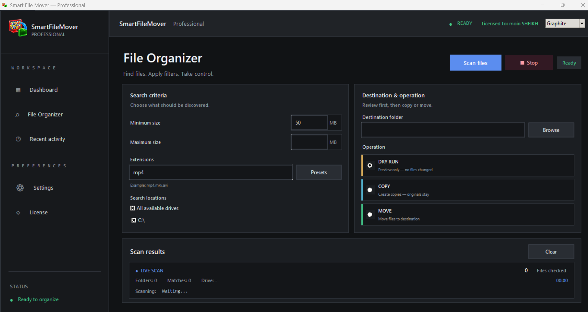

01 / CORE
▦
Dashboard
Central screen for reviewing scan results and application activity.
Smart File Scanning — Scan a selected drive or folder to discover files in one place. Review what was found before deciding what to do next.
Explore the original SmartFileMover interface screenshots. Switch between the organizer view and dashboard view.


Set up your file scan from the main organizer screen.
Explore the full feature set by category, or search for a capability. Some detailed behaviors are still being verified in the Windows app.
Central screen for reviewing scan results and application activity.
Main interface for organizing files.
Scan files in a selected location.
Filter files according to the criteria supported by the application.
Preview file operations before executing them.
Copy files to a destination while retaining the originals.
Move files to a destination.
Display discovered files in a results table.
View recent application activity.
Access application settings.
Display the location of a file.
Display the file’s name.
Display the file’s size.
Specify where files should be copied or moved.
The copy workflow is intended to keep the original file in place.
Transfer a file to its destination.
Display status information associated with file operations.
Dark interface theme.
Light interface theme.
Navigate between application sections.
Review files and their associated information.
Interface area intended for file actions.
Interface for application licensing.
A Python and Tkinter-based Windows desktop application.
Packaged as a Windows .exe application.
Feature overview: this page lists the core SmartFileMover capabilities discussed so far. Exact behavior can vary by build; test file operations on sample files before using important data.
Designed to keep file operations understandable: choose a scope, inspect the results, then decide what to do.
Select a drive or folder and configure the search criteria you need.
Let the scan discover files that match your configured filters.
Use the dashboard and table to inspect names, paths, and sizes.
Choose a copy or move operation and use Dry Run where available.
File operations should be deliberate. SmartFileMover’s workflow emphasizes scanning and reviewing first, with copy, move, and Dry Run concepts to help you stay in control.
Scan results are meant to be visible before you start a file operation.
Preview intended operations where Dry Run is available before applying changes.
The intended copy workflow preserves the source file; a move workflow is separate.
Bring scanning, review, and file actions into one focused desktop workflow. Explore the Windows application and its capabilities.
Windows installer · smartFileMover_setup.exeA few useful notes about what this website represents.
Yes. SmartFileMover has been developed as a Python-based Windows desktop application and packaged as an executable.
The intended Copy workflow preserves the original. Always test the current build with sample files before using it on important data.
Use the Download button to download the Windows installer from downloads/smartFileMover_setup.exe.
Not necessarily. This page describes the core feature set discussed for SmartFileMover. Check the current Windows build for exact control availability and behavior.